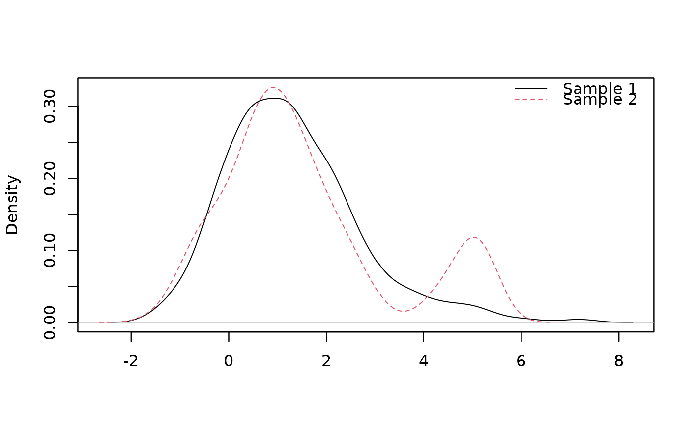

Equality test of unknown components between two admixture models using polynomial basis expansions
Source:R/orthoBasis_test_H0.R
orthoBasis_test_H0.RdTest the null hypothesis (H0: f1=f2) using the decomposition of unknown densities of the two admixture distributions in an adequate orthonormal polynomial basis. Recall that we have two admixture models with respective probability density functions (pdf) l1 = p1*f1 + (1-p1)g1 and l2 = p2f2 + (1-p2)*g2, where g1 and g2 are the only known elements. The admixture weights p1 and p2 thus have to be estimated. For further information on this method, see 'Details' below.
Usage
orthoBasis_test_H0(
samples,
known.p = NULL,
comp.dist = NULL,
comp.param = NULL,
known.coef = NULL,
K = 3,
nb.ssEch = 2,
s = 0.49,
var.explicit = FALSE,
nb.echBoot = NULL,
support = c("Real", "Integer", "Positive", "Bounded.continuous", "Bounded.discrete"),
bounds.supp = NULL,
est.method = c("BVdk", "PS"),
uniformized.knownComp_data = NULL
)Arguments
- samples
A list of the two observed samples, where each sample follows the mixture distribution given by l = p*f + (1-p)*g, with f and p unknown and g known.
- known.p
(default to NULL) Numeric vector with two elements, respectively the component weight for the unknown component in the first and in the second samples.
- comp.dist
A list with four elements corresponding to the component distributions (specified with R native names for these distributions) involved in the two admixture models. The two first elements refer to the unknown and known components of the 1st admixture model, and the last two ones to those of the second admixture model. If there are unknown elements, they must be specified as 'NULL' objects. For instance, 'comp.dist' could be specified as follows: list(f1=NULL, g1='norm', f2=NULL, g2='norm').
- comp.param
A list with four elements corresponding to the parameters of the component distributions, each element being a list itself. The names used in this list must correspond to the native R argument names for these distributions. The two first elements refer to the parameters of unknown and known components of the 1st admixture model, and the last two ones to those of the second admixture model. If there are unknown elements, they must be specified as 'NULL' objects. For instance, 'comp.param' could be specified as follows: : list(f1=NULL, g1=list(mean=0,sd=1), f2=NULL, g2=list(mean=3,sd=1.1)).
- known.coef
Coefficients in the polynomial basis expansion, corresponding to the known component densities g1 and g2.
- K
Number of coefficients considered for the polynomial basis expansion.
- nb.ssEch
Number of subsamples created from the original data to decorrelate the estimation of the different parameters.
- s
Rate at which the normalization factor is set in the penalization rule for model selection (in ]0,1/2[), see 'Details'.
- var.explicit
Boolean that allows to choose between explicit assessment of the variance of the test statistic or not (FALSE=bootstrap), FIXME : it seems that bootstrap procedure does not work in the context of admixtures.
- nb.echBoot
number of bootstrap samples if 'var.explicit' is set to FALSE.
- support
support of the densities under consideration, useful to choose the polynomial orthonormal basis.
- bounds.supp
(default to NULL) useful if support = 'bounded', a list of minimum and maximum bounds, specified as following: list( list(min.f1,min.g1,min.f2,min.g2) , list(max.f1,max.g1,max.f2,max.g2) )
- est.method
Estimation method to get the component weights, either 'PS' (Patra and Sen estimation) or 'BVdk' (Bordes and Vendekerkhove estimation).
- uniformized.knownComp_data
(default to NULL) Only useful if 'est.method' has been set to 'PS', and for real-life applications where the distribution of the known component of the admixture model is also unknown. In this case, this known component is previously made uniformly(0,1)-distributed by applying the empirical cumulative distribution of the known component function on the data. This means that all 'comp.dist' and 'comp.param' must be set to NULL.
Value
A list with six elements containing: 1) the rejection decision; 2) the p-value of the test; 3) the test statistic; 4) the variance-covariance matrix of the test statistic; 5) selected rank for testing, and 6) estimates of the two component weights.
Author
Xavier Milhaud xavier.milhaud.research@gmail.com
Examples
# \donttest{
###### Using Bordes and Vandekerkhove estimation (valid if symetric unknown component densities).
#### Under the null hypothesis H0.
## Simulate data:
list.comp <- list(f1 = "norm", g1 = "norm",
f2 = "norm", g2 = "norm")
list.param <- list(f1 = c(mean = 1, sd = 1), g1 = c(mean = 4, sd = 1),
f2 = c(mean = 1, sd = 1), g2 = c(mean = 5, sd = 0.5))
sim.X <- rsimmix(n = 250, unknownComp_weight=0.9, comp.dist = list(list.comp$f1,list.comp$g1),
comp.param = list(list.param$f1, list.param$g1))$mixt.data
sim.Y <- rsimmix(n = 300, unknownComp_weight=0.8, comp.dist = list(list.comp$f2,list.comp$g2),
comp.param = list(list.param$f2, list.param$g2))$mixt.data
plot_mixt_density(samples = list(sim.X, sim.Y), support = "continuous")

## Perform the hypothesis test in real-life conditions:
list.comp <- list(f1 = NULL, g1 = "norm",
f2 = NULL, g2 = "norm")
list.param <- list(f1 = NULL, g1 = c(mean = 4, sd = 1),
f2 = NULL, g2 = c(mean = 5, sd = 0.5))
test <- orthoBasis_test_H0(samples = list(sim.X, sim.Y),
known.p=NULL, comp.dist = list.comp, comp.param = list.param, known.coef=NULL, K=3,
nb.ssEch = 2, s = 0.25, var.explicit=TRUE, nb.echBoot=NULL, support = 'Real',
bounds.supp = NULL, est.method = 'BVdk', uniformized.knownComp_data = NULL)
#> Warning: Still needs to be implemented for cases where the unknown density mean is lower then the known density one!
#> Warning: Still needs to be implemented for cases where the unknown density mean is lower then the known density one!
test$decision
#> NULL
# }